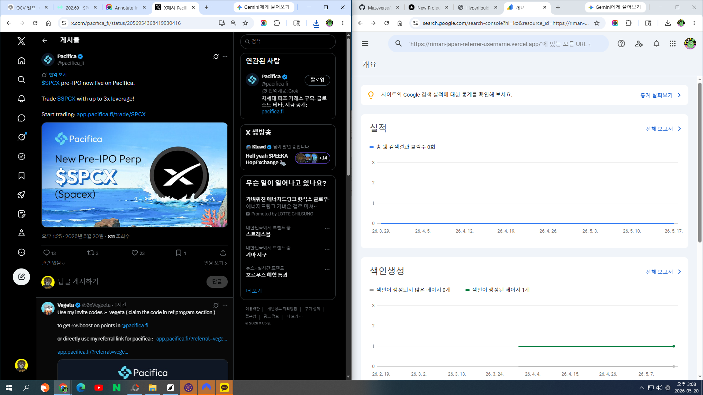

The line between crypto and traditional markets keeps getting thinner. Pacifica has now introduced SPCX, a SpaceX pre-IPO perpetual market with up to 3x leverage.
This feels like another glimpse into the future of onchain trading.
Open Pacifica
SPCX represents synthetic exposure to one of the world's most talked-about private companies: SpaceX.
Instead of waiting for a traditional IPO, traders can now speculate on price movement through perpetual markets directly inside the crypto ecosystem.
Pacifica currently supports up to 3x leverage for the SPCX market. As always, low liquidity and volatility risks should be considered carefully.
From Bitcoin and Ethereum to pre-IPO private company exposure, perpetual DEX platforms continue evolving rapidly.
Projects like Pacifica are pushing crypto trading into increasingly experimental territory.